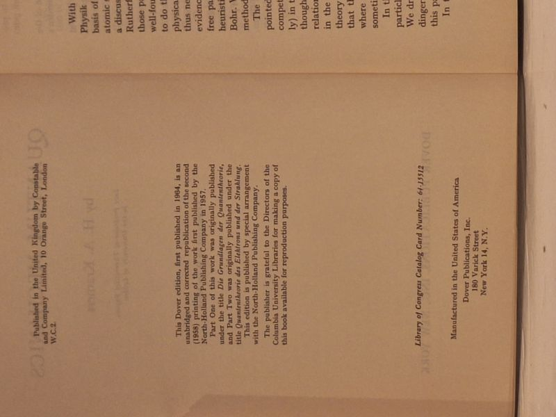

Quantum Mechanics
H. A. Kramers · Dover Publications, New York, 1964

C$25 · Very Good condition
'Quantum Mechanics' by H. A. Kramers, late Professor of Theoretical Physics in the University of Leiden, translated by D. ter Haar. Dover Publications, New York, 1964 - the unabridged, corrected republication of the work first published by North-Holland in 1957 (originally issued as 'Die Grundlagen der Quantentheorie' and 'Quantentheorie des Elektrons und der Strahlung'). Softcover (paperback) in the original cream patterned wrappers. Light edge wear and a small price sticker to the covers; binding sound, text block clean and unmarked. A Very Good copy of a classic quantum-mechanics text.
Details
- Publisher: Dover Publications, New York, 1964
- Binding: Softcover
- Edition: Dover edition (1964), transl. D. ter Haar
- Condition: Very Good
- Category: Science